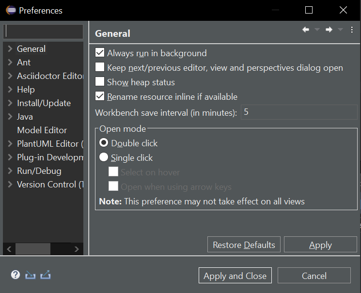
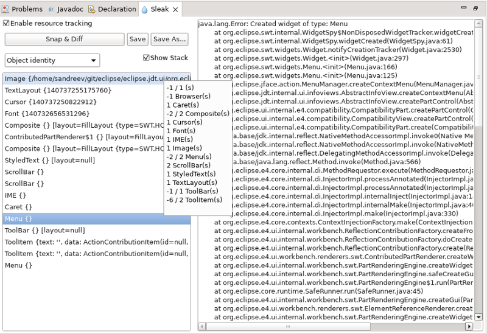

Platform Changes
org.eclipse.jface.text.codemining.LineEndCodeMining class was added to create code-minings
that are expected to be displayed as annotations after the line content. Any ICodeMiningProvider can return
on of those LineEndCodeMining additionally to existing ones.
This API is a facade for the traditional databinding API that is based
on DataBindingContext and UpdateValueStrategy. It provides
short-hands, extra type safety and better readability.
Bind.twoWay()
.from(value)
.validateAfterConvert(modelValidator)
.convertTo(IConverter.create(i -> Objects.toString(i, "")))
.convertFrom(IConverter.create(s -> s.isEmpty() ? 0 : Integer.decode(s)))
.to(WidgetProperties.text(SWT.Modify).observe(text))
.validateBeforeSet(widgetValidator)
.bind(bindingContext);
Notification builder.
As the release notes of these releases did not mention this new API, this entry was added to allow users to
discover these new features.
Please see Snippet for the usage of the Notification API.
ITextSelection to IVariable. The Debug framework will then lookup available
variables for the files being edited and display their value inline.
SWT Changes
BorderLayout with below layout design:

New look and feel:
Old look and feel:

On Windows 10, all the dark theme tweaks including the dark buttons can be disabled using the
org.eclipse.swt.internal.win32.disableCustomThemeTweaks Java property.
For Example: add this VM argument in eclipse.ini or on the command line after -vmargs:
-Dorg.eclipse.swt.internal.win32.disableCustomThemeTweaks=true
The improvements made to Sleak view UI are:
- Snap and Diff buttons are now merged to one button
- The non-disposed objects summary is shown on mouse-over in the object table
- The stack traces area and the object table are now separated by a draggable Sash

Equinox Changes
org.eclipse.p2.engine.pgp extension-point was added to p2. It allows plug-ins
to define some PGP public keys that are to be considered as trusted by default.
Changes to such a contribution when upgrading or removing their contributing plug-ins will directly impact the set of trusted keys without further action.
File class:
org.osgi.framework.Bundle.adapt(java.io.File.class)
A more conventient way is to call the new method
getBundleFileLocation(Bundle) in org.eclipse.core.runtime.FileLocator,
which returns an Optional to reflect the fact that not in all cases the file-system location of a bundle can be determined.
This method is intended as a replacement for FileLocator.getBundleFile(Bundle) and does not throw an IOException.
Both methods now run significantly faster than FileLocator.getBundleFile(Bundle) did before.